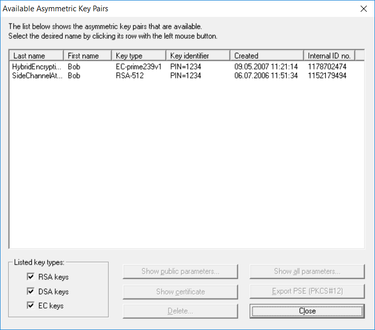

This dialog is shown by selecting Digital Signatures/PKI \ PKI \ Display/export keys.

The dialog lists all the available asymmetric key pairs.
The RSA keys, DSA keys and EC keys option fields enable you to select which keys you wish to have listed.
The buttons Show public parameters, Show all parameters and Show Certificate enable you to view the content of the selected certificate. The Show all parameters option requires entry of the PSE PIN. Not all the data is available for all certificate types (RSA, DSA, EC).
You can remove key pairs with the Delete button, if you don‚t need them any longer.
Key pair can be exported into the standardized PKCS #12 format using the button Export PSE (PKCS #12).
To close the dialog, click on Cancel.